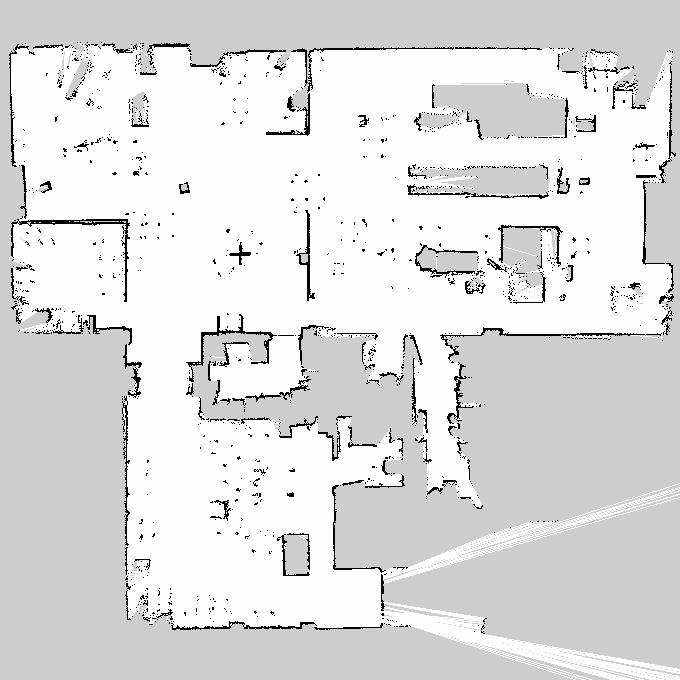
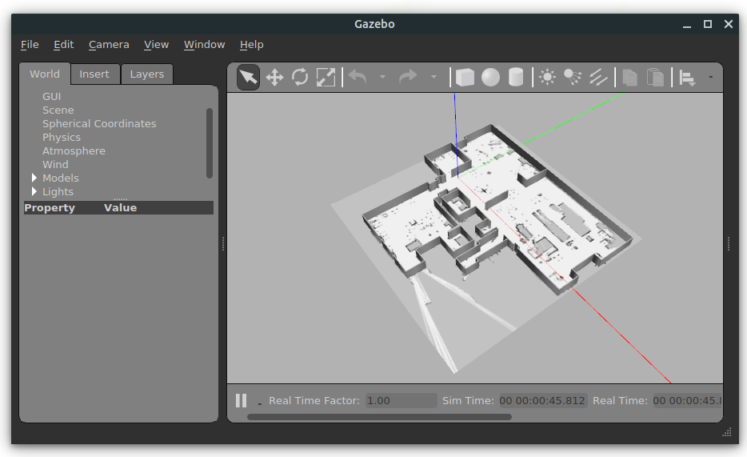

labfabex_gazebo Package¶
The labfabex_gazebo package contains launch files, 3D files and world files inteded to spawn a LabFabEx model in Gazebo. This model is used by sdvun_gazebo package to build the enviroment of SDVUN mobile robots.
LabFabEx walls¶
LabFabEx walls model was create from a map image, obtained in a SLAM task. This map is also used by SDVUN as global map in map_server node. In the image below you can see this image.
{kind=link}
With a vectorial image editor (Inkscape), all walls in previous image were converted to simple squares. Then, using Blender 3D editor and the obtained vectorial image (SVG file), all squares were extrude, generating a 3D version of the original map. This 3D document was saved as a COLLADA file (dae extension).
Using the COLLADA files, a labfabex_walls model was created. This model is stored in “<sdvun_sim_path>/labfabex_gazebo/models/labfabex_walls” and contains two files:
- model.config: a file that describes the model.
- model.sdf: A file in SDF format where COLLADA file is referenced.
The described model was written using Gazebo specifications. More info in Gazebo: Make a model
LabFabEx world¶
LabFabEx world is the Gazebo world generated with labfabex_1.world file. In this file, the labfabex_walls model is inserted: pose of this model is configured to match the map origin (home 1) with Gazebo origin.
A ground model is also added, using the map image as a texture, only for reference.
Physics of labfabex_1.world are configured to be fast. Friction model used in this Gazebo world is cone_model, that allows a realistic interaction between SDV wheels and ground.
labfabex_bringup.launch¶
labfabex_bringup.launch is the way to launch Gazebo and load the labfabex_1.world. Example:
roslaunch labfabex_gazebo labfabex_bringup.launch
Previous command will launch Gazebo and you’ll see something like image below:
{kind=link}
You can add a SDVUN using sdvun_gazebo package. Example:
roslaunch sdvun_gazebo spawn_sdvun_nav.launch